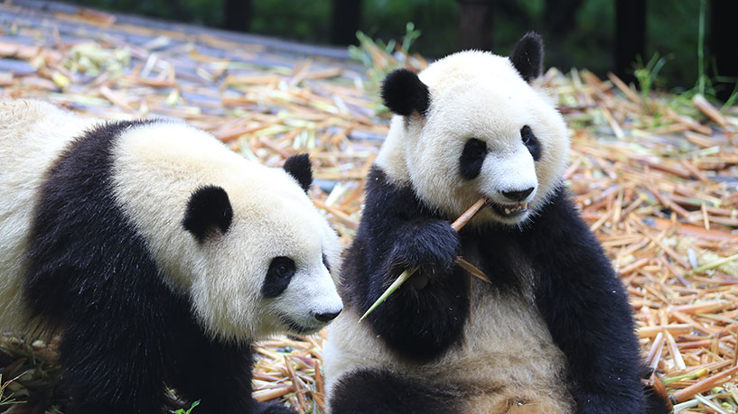

简介
成都大熊猫繁育研究基地位于四川省成都市成华区熊猫大道1375号，距市中心10公里，距成都双流国际机场30余公里。是世界著名的大熊猫迁地保护基地、科研繁育基地、公众教育基地和教育旅游基地。基地占地面积1000亩。作为“大熊猫迁地保护生态示范工程”，以保护和繁育大熊猫、小熊猫等中国特有濒危野生动物而闻名于世。 成都大熊猫繁育研究基地是在成都动物园饲养、救治、繁育大熊猫的基础上建立起来的。1997年，建立开放实验室。2019年基地接待中外游客超900万人次。

建筑特色
成都大熊猫繁育研究基地基地总面积达3570亩，其中扩建区面积为2535亩。基地以造园手法模拟大熊猫野外生态环境，大熊猫产房、熊猫饲养区、科研中心、熊猫医院分布有序，若干处豪华熊猫“别墅”散落于山林之中。扩建区充分遵循并沿用原始地形地貌，利用山体冲沟及溪流形成山地溪谷多层次景观带；根据熊猫主题特点，将项目总体划分为多个区域。截至2020年末，大熊猫种群数量达215只，是全球最大的圈养大熊猫人工繁殖种群。
荣誉
1995年，成都大熊猫繁育研究基地获联合国环境规划署颁发的“全球500佳”称号。 [20]2006年，成都大熊猫繁育研究基地被评为国家AAAA级旅游景区。